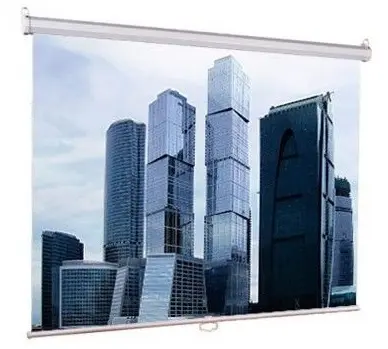

Серия ECO
Серия доступных проекционных экранов предназначена для небольших помещений переговорных комнат, для использования в классах и аудиториях, а также для быстрого развертывания пространства для демонстрации контента через проектор. Серия обеспечивает лучшее соотношение цена/качество и предлагает решения для подвесной, настенной или напольной установки, с электроприводом экрана или без него.